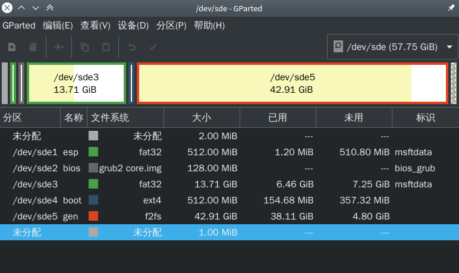

本文使用的Linux发行版是Arch Linux，这个发行版十分轻量，并且可配置程度高，安装到U盘也能拥有不错的运行速度，推荐使用Arch。
本文主要基于Linux客户机环境来安装，如果你使用的是Arch安装镜像，本文也会列出方案。
请先更新系统时间
推荐使用gparted来分区，如果你使用的是Arch ISO，请使用cfdisk或者parted。
f2fs可以换成ext4，ext4比较稳定，而f2fs偏向于速度。
如果要使用f2fs，必须要有一个独立分区的/boot，否则GRUB会无法读取配置文件（GRUB不支持f2fs）
需要的分区
一个f2fs 根分区 （越大越好）
一个ext4 /boot分区 （256MB即可）
一个ESP分区（UEFI需要） （256MB即可）
一个BIOS分区（UEFI+legacy需要） （2MB即可）
一个用于在Windows传输文件的fat32分区（可选。根据自己需求调整大小）
这是我的分区方案:

需要的分区(MBR分区表)
一个f2fs 根分区 (越大越好)
一个ext4 /boot分区 （256MB即可）
一个用于在Windows传输文件的fat32分区（可选。根据自己需求调整大小）
分区的注意事项介绍完了，安装方法参考Arch Wiki即可
为了使USBArch可以兼容所有硬件，需要做一些额外的调配。
找到HOOKS=(base udev autodetect modconf block filesystems keyboard fsck) 这行
为了让设备可以在USB3.x上启动，还需要在MODULES=()里加入：
之后运行
如果你安装了LTS内核，请运行
首先安装需要的软件包
挂载/boot分区(用lsblk -f 来查看/boot分区名字)
之后创建efi目录
将ESP分区挂载到efi目录（用lsblk -f来查看efi分区名字）
将GRUB安装到EFI分区
安装legacy方式启动的GRUB(可选)
这样就安装好GRUB了，并且同时兼容UEFI启动和UEFI+legacy 但比较老的电脑并不能启动。
首先安装需要的软件包
挂载/boot分区(用lsblk -f 来查看/boot分区名字)
安装GRUB到MBR
本方式适合所有电脑，但有些比较新的电脑需要将legacy启动支持开启。
安装f2fs文件系统的支持(使用ext4可以跳过)
安装NTFS文件系统的支持
首先安装xorg
安装lightdm
将lightdm设置为开机启动
添加一个普通用户
也可以使用startx来手动启用桌面环境，具体请阅读Arch Wiki
安装一款桌面环境/窗口管理器
如果你经常接触高配电脑,可以安装KDE/GNOME这类重量级桌面环境。
如果接触的电脑配置不算太高，或者要追求极致性能，那么我推荐你使用lxde/lxqt。
动手能力强的话，可以使用i3wm/openbox/fluxbox来获得更快的速度。
至此，完成
辣条的博客@辣条